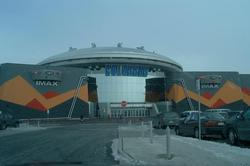
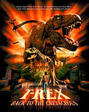

|
У нас все нормально.
В прошедшую пятницу мы отпраздновали мой день рождения. Ведь 15 февраля выпал на понедельник
(ни уму, ни сердцу), опять же я усиленно готовилась к ярмарке труда (на которую ходила 16-го).
Спасибо тем, кто
не дал мне забыть в тот трудный день, что у меня день рождения.
По-буржуйски мы праздновать не стали, то бишь в ресторан не пошли. Пока дороговато для нас
приглашать всех в ресторан. Так что отметили по-российски - дома. Лица были все те же: Ершовы
да Тесленки. Ершовы подарили мне очень красивое блюдо для торта, на подставке и с ажурной
лопаточкой. Блюдо все из себя серебристое и при свете очень сильно сверкает. В него даже
смотреться можно вместо зеркала. А Тесленки подарили плойку и корзинку с розочками. Я сначала
думала, что это не настоящие розочки, а когда пригляделась, заметила, что в корзинке горшочек с
землей, и что цветы на самом деле растут. Просто все так оформлено! Сразу и не догадаешься.
А Андрюша подарил мне... ДВД-шник :). Это вообще прикол. Звонит мне с работы и спрашивает:
- Хочешь, я тебе ДВД-шник подарю?
- 8-0 А это что?
- Это такая приблуда к компьютеру, которую можно вывести на телевизор и через нее созерцать
фильмы. Типа как видак, но гораздо лучшего качества!
Далее Андрюша излагал подробности, почему качество будет намного лучше, и почему намного
лучше
будет звук.
- Так это ты себе хочешь подарок купить?
- Нет, тебе. Спроси у Наташи Ершовой. Она тебе скажет, что качество действительно отменное!
(Как будто у них есть ДВД-шник :).
- Хорошо, спрошу. А на каких носителях мы будем смотреть фильмы?
- На дисках.
- Так это придется диски покупать. А зачем, если существует столько каналов и, соответственно,
столько фильмов в любой момент времени?
- А покупать не нужно. Можно просто брать в прокате.
- ... Не хочу ДВД-шник...
- Да ты что?! Это будет такой класс! Тебе не придется щуриться и присматриваться к нашему
малюсенькому телевизору (надо сказать, что в сравнении с габаритами комнаты телевизор
действительно выглядит малюсеньким, и, сидючи, за столом, на самом деле, тяжело следить за тем,
что происходит на экране, даже в очках). Опять же звук будет выходить на колонки: прям как в
домашнем кинотеатре!
Тем временем на кухне у меня все кипело и шкварчало в предверии скорого празднования и
грозилось подгореть...
- Ладно, - говорю, - дари ДВД-шник. Но только чтобы он был в красивой оберточке, чтобы был
перевязан красивой ленточкой и с бантиком.
- Будет сделано!
Вот такой вот состоялся у нас разговор. :) Андрюша свое слово сдержал. ДВД-шник действительно
был перевязан ленточкой с красивым бантиком в виде навороченного цветочка. Я поставила подарок
на видное место и запретила Андрюше его трогать, пока не придут гости и не полюбуются на него.
Однако, Андрюше, видно, куда-то вонзилось шило, и что-то ужасно чесалось. Его терпения хватило
только до прихода семейства Тесленко. После этого он схватил мой подарок и радостно понесся
его инсталлять. :) Я в прямом смысле слова не успела и глазом моргнуть. То бишь сам подарок,
как материальный объект, мне осязать не удалось. Я оценивала уже результаты инсталляции. :)
Люди не наврали: качество отменное! Только смотреть пока нечего. Мы уже три раза «прокрутили»
заставку к игре типа звездных войн. :) И звук пока что идет из соседней комнаты, где
располагаются компьютер и колонки. :) Правда, Андрюша уже приобрел специальный кабель для
колонок, но в зал его еще не протянул, ибо Тема, как большой специалист в этом деле, вызвался
для начала чего-то где-то в сием кабеле припаять. :)
/*Комментарий от Андрея: фигня - уже все только что протянул, щас будем в четвертый раз
экспериментировать с роликом из звездных войн из игрушки. :) А завтра пойдем в прокат на выходные
что-нть брать :) */
Я, как обычно, предложила свою помощь в этом нелегком деле, но мне в очередной раз попаять не
дали. :) Вот такой вот у меня есть подарок! :) "Входит... и... выходит. Входит... и...
выходит..."
Я себя тоже не обидела в смысле подарка. Сначала, еще до празднования, я себе купила фен
(такой микроскопический, хорошенький и с расчесочкой, - мечта идиота :)). Но по прошествии
некоторого времени мне стало казаться, что чего-то не хватает. Чем-то моя душенька все-таки
была неудовлетворена, хотя все без исключения подарки пришлись в пору. Ну, конечно же, духи!
В смысле, духИ! Никак не могла я подобрать для себя что-либо стоящее. В смысле стОящее.
И ясно, почему. Потому что до сегодняшнего дня тщетно принюхивалась к нифига не стоящему :).
Все флаконы ниже 25$ решительно наводили на меня тоску. И я уж было пала духом. Да, теперь
уже дУхом, как вдруг сегодня зашла в даун-тауне в большущий мол и... В общем, значительная
часть первого этажа того мола была отведена под духи и туалетные воды. Причем, все это дело
наставлено не одним сплошным рядом или кучей, а отдельными кольцеобразными столами. Каждое
кольцо имеет свое название: «Кристиан Диор», «Elizabeth Arden», какой-то Orlean и пр. Внутри
кольца находится продавец, на столах - пробники (тестеры они тут называются), а под столами,
собственно, витрины с духами, на которые и выставлены эти тестеры. И все без исключения флаконы
можно понюхать, набрызгать на себя, попшикать на специальные фирменные бумажки. В общем, я
разошлась. Напшикала таких бумажек с полдюжины (наиболее понравившимися мне духами) и долго
ходила вдоль вышеупомянутых колец, обмахивая себя этими бумаженциями по очереди, пытаясь, тем
самым, остановиться на чем-нибудь одном. И остановилась на «Elizabeth Arden» :). Заплатив
полсотни баксов + налоги (здесь на все, кроме пищи, налог 15%, почти как при Горбачеве :)),
я в довольно приподнятом настроении отправилась домой. Вот теперь я удовлетворена на все 100%!
:)

Выходные у нас опять прошли насыщенно... В субботу мы ездили с Ершовыми в кинотеатр на 3-D
фильм. Вот это была круть! Прежде всего, сам кинотеатр обалденный! Сделан он в виде летающей
тарелки, сверху у которой торчат две как бы антенны с шариками (типа как у Краморова на
новогоднем костюме забыла в каком фильме). А вечером, когда темно, из центра тарелки вверх
направлены несколько прожекторов, прямо вверх, в космос. Они такие четкие и резкие, что
создается ощущение, будто их можно потрогать. Если, конечно, взобраться на крышу кинотеатра :).
Внутри тоже прикольно. Всюду огонечки, лазерные лучи. Дизайн пола, потолка и стен тоже имеет
некую космическую направленность. У меня было чувство, словно я очутилась в романе «Гианея» :).
Почему именно там, не знаю, хотя прочла множество куда более навороченной фантастики. Может
быть, меня перенесло туда сходство рисунков, дизайнерского подхода. Билеты можно покупать как
в обычной кассе, так и в автоматических, которые представляют собой довольно «милого» вида
инопланетян: больших, зеленых с выпуклыми красными глазами. В грудь инопланетянам вмонтированы
монитор и емкость для забора денег. /*коммент от Андрея: какая, нафиг, емкость?!!! Карточки
там пластиковые принимают, а не деньги! :) */ Монитор работает по принципу прикосновения к
объектам всплывающего меню. Кнопок нет, мышки тоже. Просто тычешь пальцем на нужный объект и,
таким, образом, проваливаешься в другое меню /*коммент: блин, это чудо техники называется
Touch-Screen :) */, до тех пор пока инопланетянин не выудит из тебя всю касающуюся билетов
информацию и деньги :).
Билеты продают без мест. Поэтому мы выехали пораньше, дабы забить места получше. Ершовы в этом
кинотеатре тоже ни разу не были (его открыли недели три назад), и на объемные фильмы тоже ни
разу не ходили. На входе в зал нам выдали поляризованные очки, и мы пошли рассаживаться.
Несмотря на ранний выезд, места нам достались сбоку (никак не могли мы припарковаться, все
в округе было забито машинами), но когда мы уселись, то поняли, что просмотру фильма ничего
помешать не может, ибо предыдущий ряд располагается где-то на уровне колен, а экран... Экран
во всю стену! И квадратный! И по площади своей вряд ли уступает простанству, отданному под
сидения! А какие там сидения! Как в самолете, только что не откидываются :). Мягкие, с
подголовниками! К ручкам кресел приделаны кольца, для того чтобы человек мог вставлять в них
стаканы с кока-колой. Правда, приспособлений для установки мешков с попкорном я не приметила.
Люди держали их на коленях.
И вот... началось... Сначала спецэффекты. Одели мы очки и... попали совсем в другой мир...
Это не только изображение объемное, это и звук объемный! Какой это класс, словами не опишешь.
Говорят, у них даже есть специальный сеанс только с компьютерными спецэффектами. Мы поняли,
что в подобных кинотеатрах без разницы где сидеть, ибо из-за очков изображение прямо перед
тобой /*коммент: это из-за эффекта объемности - на самом деле, пофигу, откуда смотреть -
изображение всегда направлено на тебя*/. Нет, вокруг тебя. И даже возникает желание все это
потрогать и пощупать :). Мне понравился трюк с длинным цилиндрическим коридором, по которому
как-будто быстро-быстро летишь. Причем коридор сам по себе очень яркий, с меняющимися
изображениями и... направлениями. Я честно говорю, чувствуешь себя словно на аттракционе
(типа американских горок, только без болевых неудобств). И самое пааачетное в этом трюке -
это завершение коридора. Он, наконец-то, обрывается и ты, как из трубы, вылетаешь... в открытый
космос. Со звездами, все как надо. В момент вылета даже испытываешь чувство невесомости! Прямо
аж в животе все куда-то падает и перехватывает дух! Наверное, слабонервным и больным сердцем
нельзя на подобные сеансы ходить. Мало ли что может случиться. /* коммент: кстати, перед
началом сеанса было предупреждение, что беременным и слабонервным лучше на всякий случай
поостеречься :) */
А потом начался сам фильм,.. под названием «T-Rex»... :)

Сам фильм - фигня: что сюжет, что
артисты... Но когда прямо перед тобой открывается пасть тиранозавра,..- это что-то!!! Нелады
с нервами я заподозрила еще вначале фильма, когда со скалы начали рушиться на нас камни.
Прикол: все люди сидят, закрываются руками, пытаясь защитить себя от мнимых булыжников :).
Я даже расстегнула на себе все, что было, дабы поиметь возможность глубже вдыхать воздух :).
Но потом мне удалось взять себя в руки, и динозавров я воспринимала уже относительно спокойно.
Относительно Наташки, например, которая (как она утверждает) орала и визжала, а рядом сидящая
тетенька с детьми успокаивала их всех сразу :). В общем, зрелище стоит того, чтоб на него
взглянуть! Жаль, что у нас в Новосибирске нет подобных кинотеатров.
...........
Ну вот... Андрюша в мое отсутствие опять навставлял комментариев. Иной раз они бывают полезны.
Как, например, с емкостью для забора денег :). Просто мы покупали билеты в обычной кассе, потому
что наши мальчики - компьютерные гении так и не смогли установить контакт с инопланетянином :).
По этой причине я и не обратила внимания, что нужно совать в грудь последнего: монетки или
карточки :).
Воскресенье же мы провели на авто-шоу. Это дело происходило в даун-тауне и занимало несколько
громадных залов. В каждом зале - много-много автомобилей всяких разных марок: и спортивных, и
джипов, и мини-вэнов. Есть там даже лодки моторные и водные мотоциклы. Во всех машинах можно
посидеть, приспособиться к сиденью. Все можно пощупать, потрогать и прям там же купить.
Мы положили глаз на форды, сатурны и коугары (по-русски, наверное, когуары). Классные тачки,
словами не опишешь! Набрали там всяких разных рекламок с фотографиями и ценами, чтобы дома уже
присматриваться более осмысленно. То есть мы созерцали в основном спортивные тачки,
приземистые. Я окончательно для себя поняла, что полноценно могу водить только те машины,
в которых приходится почти лежать: так чтобы ноги были почти вытянуты, спинка почти
горизонтальная и, разумеется, чтобы был подголовник. Помню еще, когда мы ходили на курсы в
«Светофор», мне было трудно пересаживаться с девятки на шестерку, так как в последней я
ощущала себя как в квадрате. Именно как в квадрате, а не в кубе. Кошмар! Ну а эти машинки
даже с девяткой не идут ни в какое сравнение! Класс! Правда, после трех часов блуждания по
(всего двум!) залам и лазания по автомобилям у меня разболелась голова, и глаза перестали
фокусироваться :). Наташа Ершова тоже подустала, и мы с ней поехали домой. А мужичины наши
были там до победного конца. Там же прям они пообедали и продолжили осмотр. Андрюша
преимущественно - спортивных тачек, а Тема - джипов. Короче говоря, Вечером Андрюша приволок еще кучу трофеев, в смысле рекламных
брошюрок и журнальчиков, и мы по N+первому разу их время от времени пролистываем, все больше
склоняясь к мысли, что нам обоим жутко нравится коугар. Хотя я, например, не прочь бы возыметь
и Pontiac FireBird, а Андрюша - форд-эскорт :). Эх, мечты, мечты... В любом случае, нам не
светит купить машину аж до августа (из-за долга). К тому времени многое может перемениться...
А пока и помечтать прикольно :).
Что еще написать?..
Вчера я ездила в даун-таун тестироваться, для того чтобы попасть на Link - это бесплатные
многоуровненые курсы английского. Там есть возможность самому поболтать да послушать, как
другие болтают. Андрюша-то на работе частенько с английской речью пересекается, а мне общения
маловато. Почти все важные бытовые вопросы я уже решила и, тем самым, свела свое общение с
носителями языка к минимуму. Так можно и все навыки подрастерять. Поэтому и решила я пойти на
английский. Записали меня туда с понедельника.
Собственно, сам тест описывать неинтересно, ибо был он очень простой. Прямо скажем, на
выявление, идиот ты или нет :). Интересны были мысли, посетившие меня во время проезда в
метро.
...Дело было утром, 8 с копейками... Ехать до даун-тауна долго. Посему мне ничего не оставалось
делать, кроме как разглядывать окружающее меня общество. И в какой-то момент я осознала тот
факт, что утренние канадцы очень похожи на наших, российских, граждан. До этого мне приходилось
видеть только дневных людей: праздных, неторопливых и соответствующим образом одетых. А тут я
обнаружила, что все люди одеты культурно и выглядят по-деловому: в костюмах, брюках,
ботиночках, в пальто или в куртках. Кстати, здесь пальто очень распространено. Тоько почему-то
народ одевается в основном в черные пальто или темно-серые, чего не скажешь о куртках. Куртки,
напротив, все светлых тонов. Обыкновенные куртки, о которых в России с приходом кожи почти
забыли. В коже из всего вагона была только я одна :). Сами люди - подстать своей одежде. С
прическами, с макияжем, с маникюром. И деловое выражение лица. Видимо, от этого сии лица и
показались мне столь знакомыми и близкими, даже самые что ни на есть нерусские :). У кого-то
отражены на челе заботы о грядущем дне. Кто-то целиком и полностью погружен в себя и свои мысли
(как будто из института математики :). Кто-то, прикорнув у стеночки, дремлет, досматривая
последние сны. Кто-то, напротив, бодро пролистывает утренние газетенки. Кстати, неправду
говорят, что народ здесь нечитающий. Во всяком случае, в транспорте здесь читающего народу
куда больше, чем в России. Прямо специально берут люди с собой из дому художественную
литературу. И вроде едет-то человек три остановки всего, ан нет, достает из сумочки старательно
обернутую газеткой книжицу, открывает на закладочке и с упоением погружается в чтение.
Причем многие так делают. Не только те, чья деловая внешность говорит сама за себя, - хоть в
транспорте урвать минутку-другую для чтения. Но даже люди, о шибкой занятости которых можно
только догадываться, и то не сразу. И даже люди преклонного, так сказать, пенсионного возраста,
которым тут, в Канаде, вообще спешить некуда. В общем, читают люди всюду.
Да... Я, кажется, говорила о метро и об утренних людях. Так вот, во всем вагоне было только два
человека, нарушающих общую гармонию (не считая меня с кожаной курткой :)). Одним был мужичок
алкоголического вида: в грязных штанах и с пропитой физиономией (уж не знаю, что занесло его
в метро в такую рань). А вторым был - по-пацански одетый негр. Одетыми по-пацански я называю
парней, преимущественно школьников-подростков и почему-то негров, в странных джинсах. Это у
них, видно, мода такая. Книзу джинсы те расширяются и волочатся по полу. А сверху - вообще
атас! :) То место, с которого у джинсов начинаются ноги, у этих товарищей находится на уровне
колен :). Причем талия и бедра располагаются, где и положено. Прямо такие джинсы и шьют. Для
нас с Андрюшей до сих пор остается загадкой, как они в таких штанишках передвигаются, особенно
если приспичит где ногу задрать. Это ж уму непостижимо! :)
Вообще, многое пока кажется странным. Например, здесь народ не приучен ходить с сумками, кроме
как с деловыми. В каждом магазине тебе дают под продукты фирменные пакетики с названием данного
магазина. И, заходя в следующий магазин, тебе нет надобности куда-то эти пакетики определять
(если, конечно, ты не на машине). Берешь тележку или корзинку и нагружаешь ее уже здешними
товарами. И на кассе никто не станет доколупываться, что у тебя в том пакетике, ибо на нем
написано, из какого он магазина. Никому, конечно, не взбредет в голову положить в тот пакетик
что-нибудь из этого магазина :). Здесь все честные. Я думаю, это потому, что все друг другу
доверяют. Продавец - покупателю, а покупатель платит тем же продавцу. Вот такое отношение к
человеку мне по душе! Я всегда говорила, что человек таков, каким его видят окружающие. Видят
его хорошим, добрым и честным. - И он будет таким!
Иногда, правда, сие человеколюбие кажется безмерным. Например, мне все тут нравится.
Не нравится только, что придурки здесь ходят на свободе. В прямом смысле слова. Здесь нет
дурдомов, ибо идиотов тоже почитают за людей и считают негуманным держать больного человека
в застенках, ущемляя, тем самым, его права как личности. В результате случаются не очень
приятные вещи. Говорят, в даун-тауне есть маньяки, околачивающиеся в метро и сталкивающие
людей под поезд. Я теперь боюсь ездить в метро, видя в каждом человеке потенциального убийцу :),
хотя это и противоречит моему предыдущему абзацу :). Но там я говорила все же о нормальных
людях. А этих... фиг разберешь, что у них на уме. Одного дебила я уже видела, правда,
неагрессивного, но люди, на всякий случай, сторонились его. Таких, конечно, всюду хватает,
и в России тоже. Но там хоть с маньяками борются. А здесь... свои законы. Вероятность того,
что со мной или с Андрюшей что-либо такое случится, естественно, мала, но все равно... как-то
не по себе. В принципе, живет же как-то страна и не видит в данном вопросе особой проблемы.
Причем, страна не самая плохая :). Опять же всюду надо искать плюсы. Если с ума свихнусь, то
останусь на свободе! :)
А преступности здесь очень мало. Новость о каком-нибудь неудачном изнасиловании могут
разжевывать целую неделю, за неимением других фактов преступности. :) Впрочем, у людей здешних
нет повода для темных дел. Зачем? Если всем живется хорошо, все в достатке. Пособие по
безработице можно получать хоть всю жизнь, еще и машину на него купить. Правда, это все за
счет налогов. Налогов с тех, кто работает.
...Чего-то я опять наворотила целую гору. Пора приступать к окончанию... хм-хм... главы :).
Как я и писала, у нас все в порядке. Здоровье нормальное. Погода тоже нормализуется
по-маленьку. До вчерашнего дня был мороз (-8), хотя снег остался только кое-где на газонах.
А сегодня уж и солнце выглянуло. Можно балкон опять настежь открывать.
Счастливо!
Следующее письмо- Письмо 5
|
{kind=link}
{kind=link}